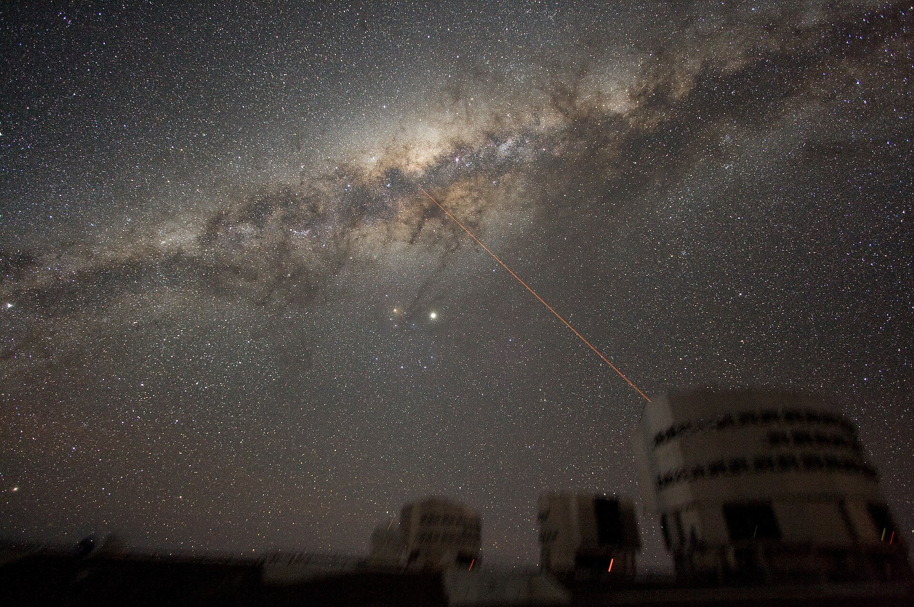
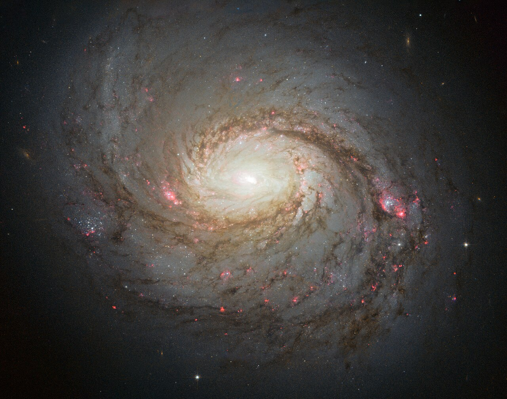
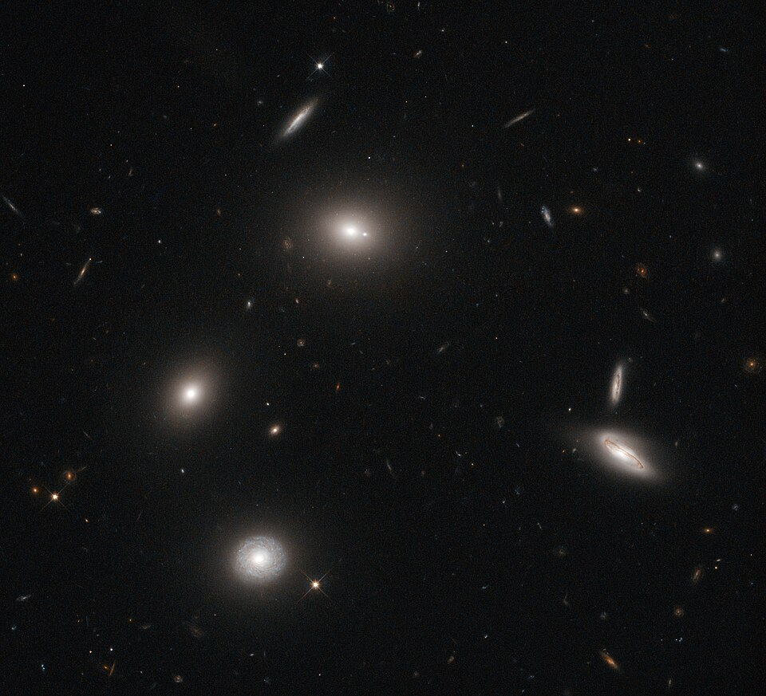
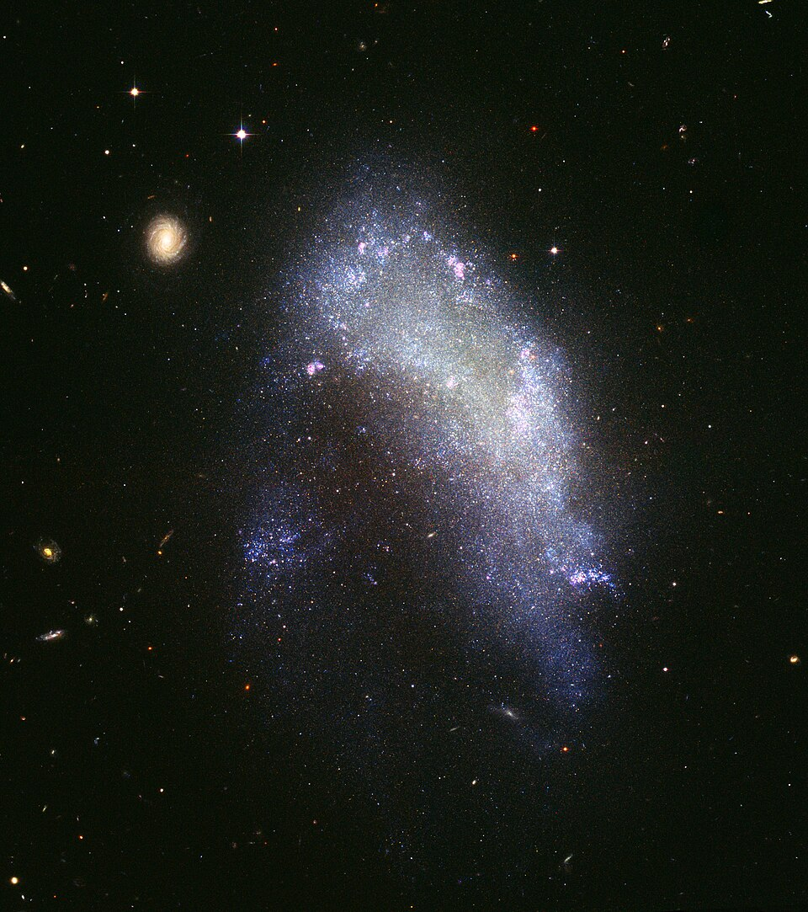

Islands of Stars
Galaxies

The Milky Way
A barred spiral galaxy approximately 100,000 light-years in diameter, our home contains an estimated 100–400 billion stars and likely more planets. Our solar system orbits about 26,000 light-years from the center, completing one galactic revolution every 225–250 million years — a "cosmic year."
At the core lies Sagittarius A*, a supermassive black hole of 4 million solar masses. The galactic plane is threaded with dark dust lanes, brilliant star-forming nebulae, and ancient globular clusters — some nearly as old as the universe itself.

The Andromeda Galaxy
At 2.537 million light-years, Andromeda (M31) is the most distant object visible to the naked eye — and the largest galaxy in our Local Group with roughly one trillion stars. On a dark night it appears as a faint smudge roughly six times the width of the full Moon.
Andromeda is approaching us at ~110 km/s. In approximately 4.5 billion years the two galaxies will begin to merge, eventually forming a giant elliptical galaxy astronomers have nicknamed Milkomeda. Our Sun will almost certainly survive, though its position in the resulting galaxy will change dramatically.
Galaxy Classification — The Hubble Sequence
Edwin Hubble's 1926 morphological classification system remains the foundation of galaxy taxonomy.

Spiral Galaxies
Rotating disks of stars with prominent arms. Our Milky Way is a barred spiral (SBb). Arms are sites of active star formation.

Elliptical Galaxies
Smooth, featureless stellar systems, often the result of galactic mergers. M87 hosts the famous supermassive black hole imaged in 2019.

Irregular Galaxies
No defined regular shape — often shaped by tidal interactions. The Magellanic Clouds are irregular satellites of the Milky Way, visible from Earth's southern hemisphere.